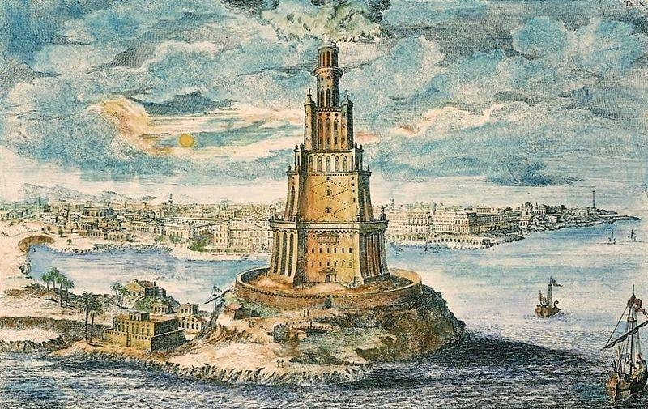
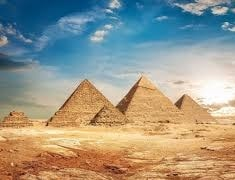
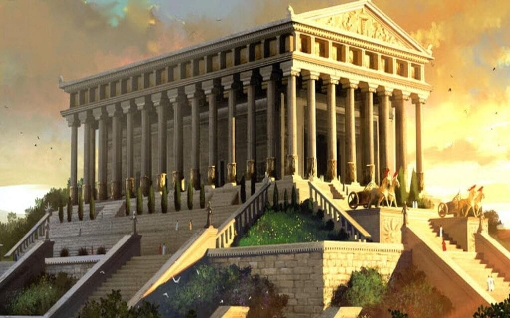

O stronie
Strona ta została stworzona, aby dostarczyć informacji na temat siedmiu cudów świata starożytnego. Znajdziesz tu galerie zdjęć, ciekawostki które umożliwią ci lepsze zrozumienie tych niezwykłych miejsc.
Galeria



O stronie
Celem tej srtony jest przybliżenie historii, architektury oraz kultury związanej z tymi miejscami. Znajdziesz tutaj galerie zdjęć, ciekawostki oraz interaktywne mapy, które pomogą Ci lepiej zrozumieć znaczenie każdego z tych cudów.
Każdy cud świata jest nie tylko arcydziełem inżynierii, ale także symbolem ludzkiej wytrwałości i kreatywności. Miłego przeglądania!
Kontakt
Daty stworzenia wszystkich cudów świata starożytnego
| Wielka piramida w Gizie | Wiszące ogrody babilonu | Swiatynia Artemidy w Efezie | Posąg Zeusa w Olimpii | Mauzoleum W Halikarnasie | Kolos Rodyjski | Latarnia w Faros |
|---|---|---|---|---|---|---|
| 2570 - 2560 p.n.e. | 605 - 562 p.n.e. | 550 p.n.e. | 435 p.n.e. | 350 p.n.e. | 292 - 280 p.n.e. | 280 - 247 p.n.e. |
Wysokość cudów, od najwyższego
- Wielka piramida w Gizie - 138,5m
- Latarnia w Faros - 100 - 130m
- Swiatynia Artemidy w Efezie - 115m
- Mauzoleum W Halikarnasie - 45m
- Kolos Rodyjski - 33m
- Posąg Zeusa w Olimpii - 13m
- Wiszące ogrody babilonu - Rozmiary nieznane, ale prawdobodobnie niższe od pozostałych
Kraje w których znajduje się cud (aktualnie)
- Wielka piramida w Gizie - Egipt
- Wiszące ogrody babilonu - Irak
- Swiatynia Artemidy w Efezie - Turcja
- Posąg Zeusa w Olimpii - Grecja
- Mauzoleum W Halikarnasie - Turcja
- Kolos Rodyjski - Grecja
- Latarnia w Faros - Egipt